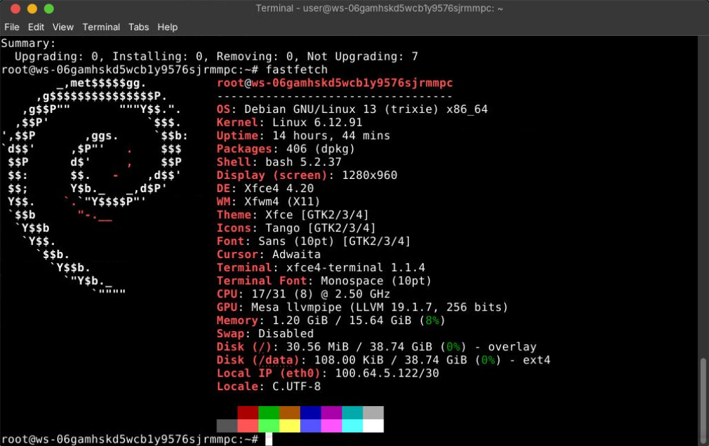
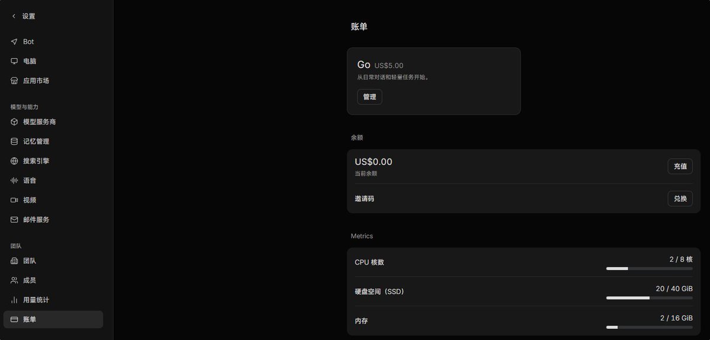

今天开始在用5刀的Memoh Go送的VPS，昨晚太火爆了现在AcBox老师他们暂停了注册，可能下周一、周二才会开放注册了
打算整一个简易的开发环境，特别是网络在日本、无限流量，打Tailscale特方便！现在跟GrokBot提供的美国VPS之间的延迟是83ms左右，近期在研发跨境的路由协议，因此这样的环境宝贵而不可多得
这套Memoh服务在GitHub是开源的，等不及也可以自建，给公司员工发Agent的同时还能省去配置AI的步骤，甚至是二开后在内网使用，是不错的选择！

打算整一个简易的开发环境，特别是网络在日本、无限流量，打Tailscale特方便！现在跟GrokBot提供的美国VPS之间的延迟是83ms左右，近期在研发跨境的路由协议，因此这样的环境宝贵而不可多得
这套Memoh服务在GitHub是开源的，等不及也可以自建，给公司员工发Agent的同时还能省去配置AI的步骤，甚至是二开后在内网使用，是不错的选择！


已订购Memoh Go，准备迁移 https://t.co/hWWUxmbnN8 的一些服务上去
花5刀就能得到：
8 核 CPU
16 GB 内存
每月 2500 credits 的 Token 额度
40 GB 持久化 Volume 总容量（不含 rootfs） https://t.co/qr9cVhf4nS https://t.co/YoY8HSlP7B
花5刀就能得到：
8 核 CPU
16 GB 内存
每月 2500 credits 的 Token 额度
40 GB 持久化 Volume 总容量（不含 rootfs） https://t.co/qr9cVhf4nS https://t.co/YoY8HSlP7B